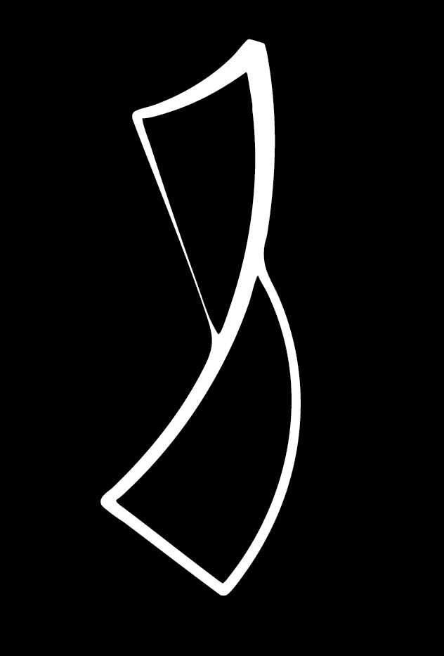

ItsCardistry
Short-form content brand
A project where I brought my favorite hobby to a wider audience by developing a bespoke content brand on TikTok, Instagram, and YouTube - not by chasing trends, but by continuously testing and refining content strategies based on real-time audience insights.
